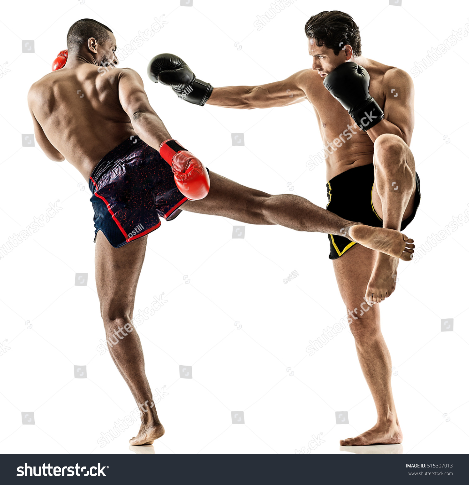

Kickboksen is een sport waarbij je met handen en voeten vecht. Het komt oorspronkelijk uit Thailand en staat ook wel bekend als Muay Thai. Het is een super manier om jezelf te verdedigen en ook een goede workout.
Kickboksen is al heel oud en komt oorspronkelijk uit Thailand. Het was een manier voor soldaten om te vechten. Maar het moderne kickboksen, zoals wij dat nu kennen, begon pas echt in de 20e eeuw. Toen werden Thai vechttechnieken gecombineerd met westerse bokstechnieken.
Bij kickboksen gebruik je zowel je handen als je voeten. Je kunt stoten, trappen, knieën gebruiken en zelfs ellebogen inzetten. Dit maakt het een veelzijdige sport die je hele lichaam gebruikt. Trappen doe je met je scheenbenen of voeten en stoten doe je met je vuisten.
Kickboksen heeft veel voordelen. Het helpt je fit te blijven, je spieren sterker te maken en je leniger te worden. Het is ook een goede manier om stress kwijt te raken en je leert hoe je jezelf kunt verdedigen. Daarnaast helpt het je om zelfvertrouwen te krijgen en meer discipline te ontwikkelen.
 thayron bernabela 1c`